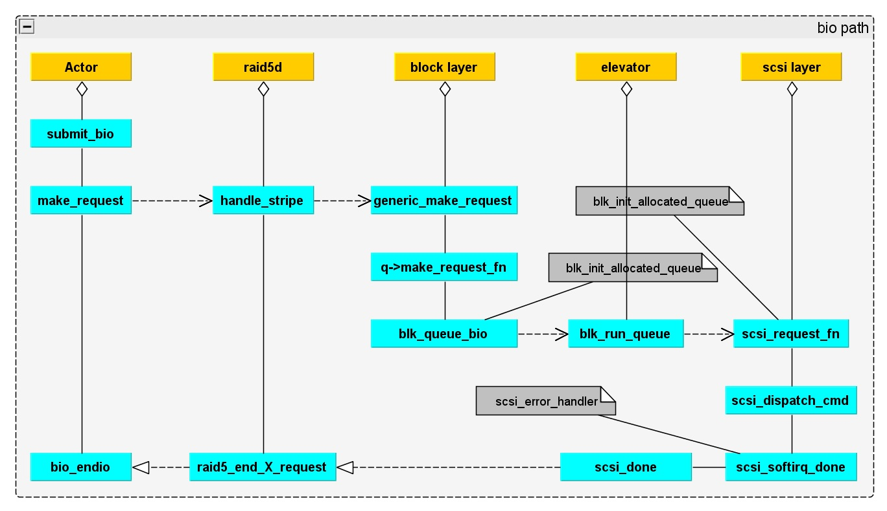

Block IO Path in Kernel
Block io Path
Block io Path Overview
Linux VFS cache path, submit_bh –> submit_bio.
Chanllenges
- Single-queue contend between multi-cpus and multi-threads, High Performance Storage with blk-mq and scsi-mq(Christoph Hellwig).
Related Books
- 存储技术原理分析 作者：敖青云
- EMC’s Information Storage and Management